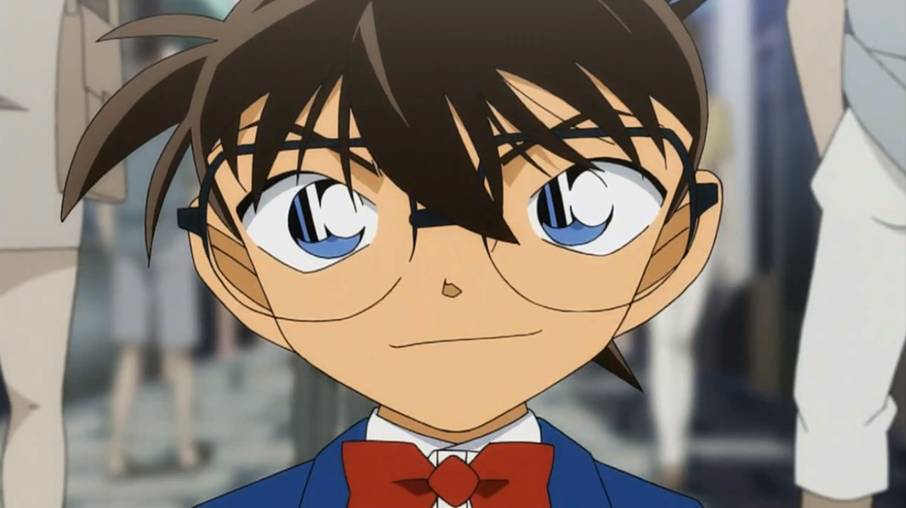
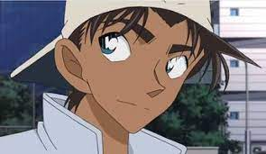
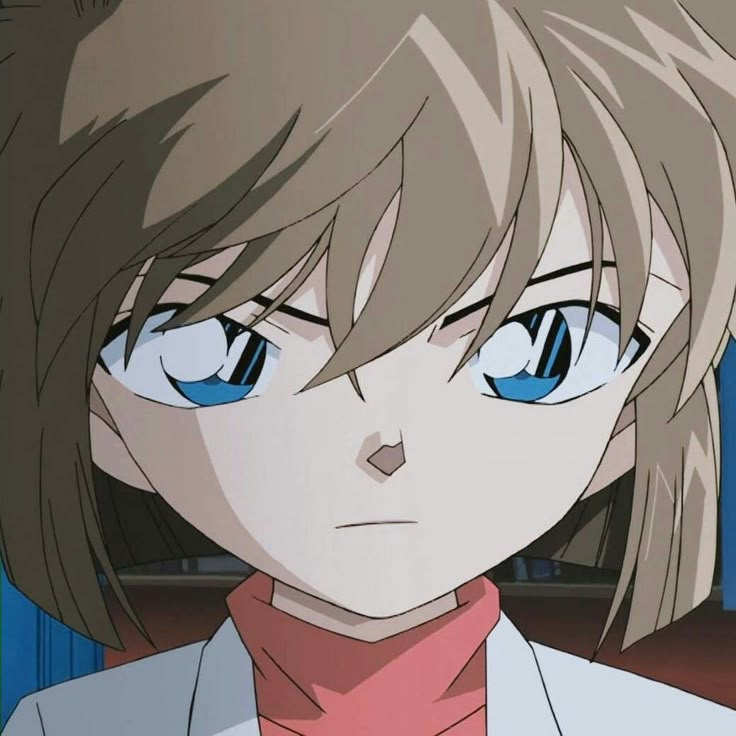

1. Conan Edogawa

Due to Conan being a detective, his sharp mind and fast-thinking skills make him the brains on my team, coming up with strong plans to outsmart and defeat any opponent. Conan is also recognized for his leadership and determination, which make him a strong captain on my team. With Conan's logical mind and unwavering focus, he can easily resolve any problems while helping guide my team to success, even under great pressure.
2. Ran Mouri
Ran is trained in karate and physical strength; therefore, she would make the ultimate offensive and defensive player. With her strength, speed, and quick instincts, she would be able to dodge and throw effortlessly, making her the ultimate frontline attack player. Ran's also has an optimistic mindset. Therefore, she would benefit my team greatly, for she can help keep her teammates motivated during the game.
3. Heiji Hattori

Heiji is a detective and athlete; therefore, he is known for his strength, brains, and spirit in being competitive. Heiji would become an amazing all-around player. Heiji sometimes assists Conan during his detective work, as they team up together to solve cases. Therefore, Heiji would support Conan’s plans by unveiling their opponent's possible strategies and help Ran to attack their rivals, thus enhancing the chances of winning.
4. Ai Haibara

Ai’s character is observant, calculating, and calm; she is always planning her next move. Therefore, she will know when to dodge and throw her shots, allowing her to attack and take down her opponents silently while her teammates become the main distractions. By becoming the defense, Ai can keep everyone grounded, as she becomes the defensive specialist.
5. Kaito KID

Kaito KID is known to be a wild card during the games. As a magician and a thief, he is quick with his mind, hands, and feet. Therefore, his trickery, showmanship, and agility make his opponents concerned about what his next move may be, making him unpredictable when playing. By creating dramatic play, faking throws, and dodging easily with a flashy smile, Kaito KID is known to be a trickster player in every game.